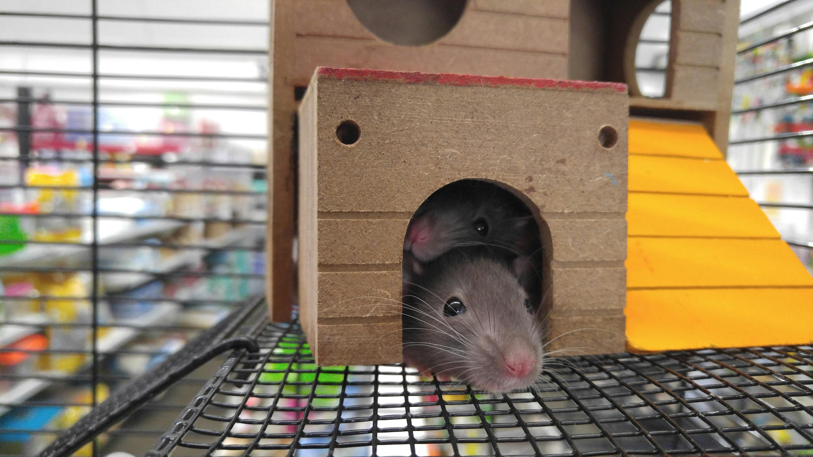

Rats: Domestic and Feral Varieties
Domestic rats, often called fancy rats, are selectively bred for temperament, health, and appearance. They are typically gentle, social, and enjoy interacting with people when properly handled. In a home environment, domestic rats can form strong bonds with their caregivers, learn simple tricks, and thrive with enrichment, companionship, and regular care. Their diets, sanitation, and medical needs are closely managed, which results in longer lifespans and far fewer health uncertainties than their wild counterparts. Over generations, they’ve become animals that depend on humans for safety and well-being.
Wild rats, by contrast, have not been bred for interaction with humans and behave according to survival instincts. They are wary, quick to flee or defend themselves, and are more prone to carry pathogens because they live in uncontrolled environments where food sources, shelter, and exposure to other animals vary widely. Wild rats must constantly adapt to unpredictable surroundings, which shapes their behavior in ways that can seem aggressive or chaotic to people. Their lifespans tend to be shorter due to predation, disease, and scarcity, and their behaviors are optimized for survival—not companionship.

Viewing domestic and wild rats as the same creates problems for both human understanding and animal welfare. Domestic rats may be unfairly stigmatized as dirty or dangerous, which can lead to neglect, fear-based reactions, or even barriers to proper veterinary care. Meanwhile, misconceptions about wild rats can lead to ineffective or inhumane pest management, because strategies that work for domestic animals don’t translate to animals driven by survival pressures. Recognizing the differences helps people care for domestic rats responsibly, address wild rat issues with more accuracy and empathy, and make decisions that reflect the true nature and needs of each.